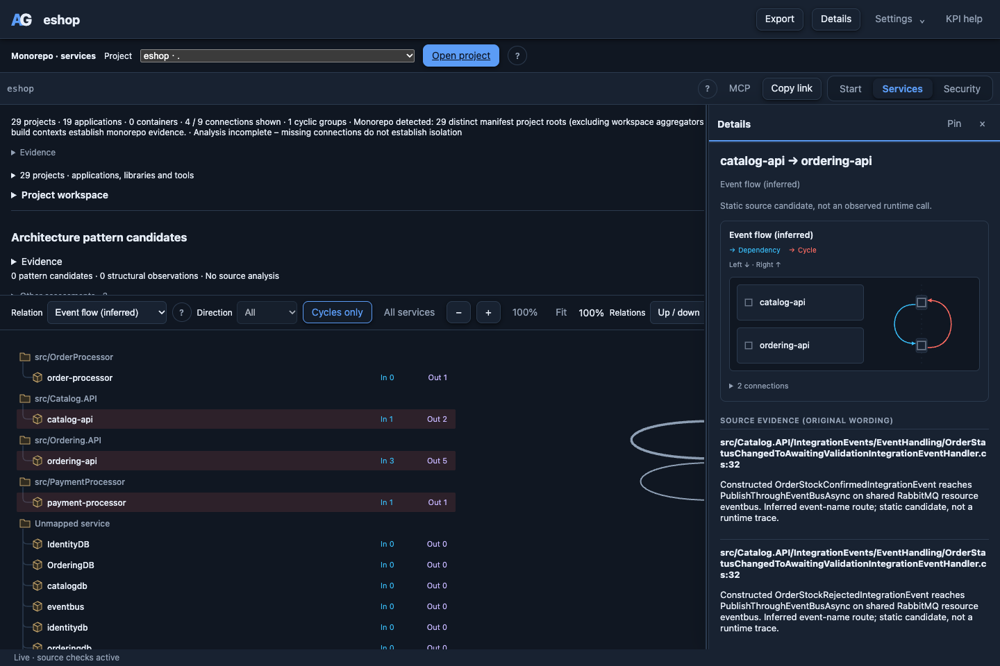

Microsoft eShop
A real .NET / Aspire sample with source-backed, inferred event relationships. This example uses revision 913acea66708a59595351174cee9b29f37179d29.
1. Get the example
Run from the ArchGuard repository root:
git clone https://github.com/dotnet/eShop.git examples/checkouts/eshop
git -C examples/checkouts/eshop checkout 913acea66708a59595351174cee9b29f37179d29
archguard serve examples/checkouts/eshop --port 8793Open http://127.0.0.1:8793/. Static service discovery does not require starting the application or its containers. Compiler-backed C# analysis requires the appropriate .NET SDK, reference packs and existing dependency metadata.
2. Focus the real application
In World View, select deployment aspire:src/eShop.AppHost/AppHost.cs. This keeps the main application separate from test-host variants. Choose Event flow (inferred), then Cycles.
The recorded revision contains one event-cycle group with three services and four directed connections:
- Ordering API → Catalog API: order-status events request stock validation and notify payment completion.
- Catalog API → Ordering API: stock-confirmed and stock-rejected events return the result.
- Ordering API → Payment Processor: a stock-confirmed order triggers payment processing.
- Payment Processor → Ordering API: payment-succeeded or payment-failed events report the outcome.
This is a strongly connected service group, not proof of infinite processing or a defect. Asynchronous business workflows can legitimately contain structural cycles.
3. Inspect the source evidence
Open Services, choose Event flow (inferred) and Cycles only. Focus a connection and press Enter to open its details. The evidence lists publisher calls, subscription registrations and their source locations.

For example, OrderStockConfirmedIntegrationEvent is published from Catalog's order-validation handler and subscribed to in src/Ordering.API/Extensions/Extensions.cs. ArchGuard matches the event name and shared RabbitMQ resource.
Evidence boundary: these are static candidate routes. No runtime trace was imported for this recording. A shared event name alone does not prove that a message was delivered in production.
4. Open a service
Return to World View and choose src/Ordering.API in the area selector, or select its surface and use Zoom into service. The viewer opens that service's own source scope, packages and classes. Use its breadcrumb to return to the repository overview.
archguard services examples/checkouts/eshop --format jsonResults depend on the revision, selected deployment and supported source patterns. Missing or dynamic routes remain analysis gaps.
Source: pinned Microsoft eShop revision. Licensed under MIT; retain its upstream license. This example does not imply endorsement.